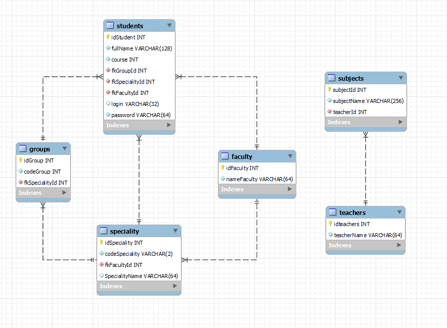

Інфологічна модель:

- Студент навчається тільки на одному факультеті. На факультеті може навчатися де-кілька студентів. Отже
багато до одного.
- Студент навчається тільки на одній спеціальності. На спеціальності може навчатися де-кілька студентів. Отже
багато до одного.
- Студент навчається тільки в одній групі. В групі може навчатися де-кілька студентів. Отже
багато до одного.
- Група належить тільки до однієї спеціальності. На спеціальності може бути де-кілька груп. Отже
багато до одного.
- Спеціальність належить тільки до одного факультету. На факультеті може бути де-кілька спеціальностей. Отже
багато до одного.
- Предмет може мати лише одного викладача. Викладач може викладати де-кілька предметів. Отже багато до одного.